library(Giotto)
# install extra package needed later in this example
if (!requireNamespace("ggridges", quietly = TRUE)) {
install.packages("ggridges")
}
# Ensure Giotto can access a python env
genv_exists <- checkGiottoEnvironment()
if(!genv_exists){
# The following command need only be run once to
# install a default Giotto environment
installGiottoEnvironment()
}
# set specific python path to use or python environment name
# leaving NULL will use default (see ?set_giotto_python_path())
python_path <- NULL
set_giotto_python_path(python_path = python_path)Wang et al. created a 3D spatial expression dataset consisting of 28 genes from ~30,000 single cells in a visual cortex volume using the STARmap technology.
The STARmap data to run this tutorial can be found here.
Alternatively you can use GiottoData::getSpatialDataset()
to automatically download this dataset like we do in this example.
This data consists of a set of expression values aggregated to 3D cell centroid coordinates.
Excitatory neuron markers (6):
Inhibitory neuron markers (8):
Activity-dependent genes (3):
Fos, Egr1, Egr2: Immediate early genes expressed in response to neuronal activity
Glial cell markers (4):
Other genes (7):
Mgp, Nov, Plcxd2, Sulf2, Ctgf: These show more specific expression
patterns
Prok2, Bdnf: Associated with specific neuronal functions
{GiottoData} is a utility package that provides access to small
example datasets premade into giotto object. It also has a
utility to download un-ingested data of some curated datasets.
We will download two .txt files containing the STARmap
data into a starmap subdirectory of the working
directory.
if (!requireNamespace("GiottoData", quietly = TRUE)) {
remotes::install_github("drieslab/GiottoData")
}
# ** DOWNLOAD DATA TO WORKING DIRECTORY OR OTHER DESIRED DIRECTORY **
data_path <- file.path(getwd(), "starmap")
# if wget is installed, set method = 'wget'
# if you run into authentication issues with wget, then add " extra = '--no-check-certificate' "
GiottoData::getSpatialDataset(
dataset = 'starmap_3D_cortex',
directory = data_path,
method = 'wget'
)
# Get filepaths to the two files downloaded
expr_path = file.path(data_path, "STARmap_3D_data_expression.txt")
loc_path = file.path(data_path, "STARmap_3D_data_cell_locations.txt")Next we can start setting up the Giotto analysis project. This object will ingest the raw data and processing and analyses can then be run on top of it.
First we create a set of instructions for the Giotto object. These define behaviors that should be applied on the project level. For further info, see the Giotto instructions tutorial
# ** SET WORKING DIRECTORY WHERE PROJECT OUTPUTS WILL SAVE TO **
results_folder = '/path/to/results/'
instrs <- createGiottoInstructions(
save_dir = results_folder,
save_plot = TRUE,
show_plot = FALSE,
return_plot = FALSE
)This dataset contains a set of expression information and 3D coordinates with no mapped cell IDs.
star_expr_table <- data.table::fread(expr_path, header = FALSE)
feature_names <- star_expr_table[[1L]] # extract first table column of gene names
star_expr <- star_expr_table[, 2:ncol(star_expr_table)] %>%
as.matrix()
rownames(star_expr) <- feature_names
force(star_expr[1:6, 1:10]) # show subset V2 V3 V4 V5 V6 V7 V8 V9 V10 V11
Slc17a7 0 0 0 0 0 0 0 930 0 0
Mgp 0 0 0 0 0 0 0 349 0 0
Gad1 0 0 0 0 0 0 0 5073 0 0
Nov 0 0 0 0 0 0 0 2248 0 0
Rasgrf2 0 0 0 0 0 0 0 952 0 0
Rorb 0 0 0 0 0 0 0 3526 0 0
star_locs <- data.table::fread(loc_path, header = FALSE)
data.table::setnames(star_locs, c("x", "y", "z"))
force(star_locs) x y z
<int> <int> <int>
1: 4 575 7
2: 4 1074 8
3: 3 1164 6
4: 4 1331 6
5: 5 520 11
---
33594: 1541 1373 94
33595: 1556 1086 94
33596: 1563 1508 94
33597: 1568 1390 94
33598: 1648 1181 94requireNamespace("rgl", quietly = TRUE) {
install.packages("rgl")
}
rgl::plot3d(star_locs$x, star_locs$y, star_locs$z)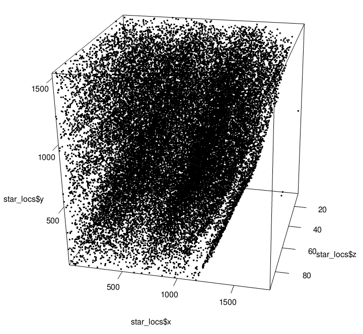
Preview of STARmap 3D Coordinates
These data can be fed into createGiottoObject() which
will generate a simple identifier for each of the cells and map them to
the expression and spatial information.
star <- createGiottoObject(
expression = expr_path,
spatial_locs = loc_path,
instructions = instrs
)The default names created for each cell:
[1] "cell_1" "cell_2" "cell_3" "cell_4" "cell_5" "cell_6"Preview of the feature names in the dataset, just to check that these are attached correctly.
[1] "Slc17a7" "Mgp" "Gad1" "Nov" "Rasgrf2" "Rorb"Lastly, we can check how many cells and features are available in
this dataset by using dim()
dim(star)[1] 28 33598There are 33598 cells in this dataset with information on the expression of 28 genes.
Now that the data is ingested into the giotto object, we
can start filtering and processing the data for downstream analyses.
These steps are needed to maximize the biological signal during
analysis.
First we perform filtering which helps ensure that the data used in downstream steps such as dimension reduction and clustering are not influenced by poor quality data. Additionally, removal of cells with 0 counts is necessary for library size normalization.
We can get a grasp of the expression distribution of the data by
using filterDistributions().
filterDistributions(star,
detection = "feats",
save_param = list(save_name = '1_a_distribution_features')
)
filterDistributions(star,
detection = "cells",
method = "sum",
scale_axis = "log2",
scale_y = "log2",
save_param = list(save_name = '1_b_distribution_sum_per_cell')
)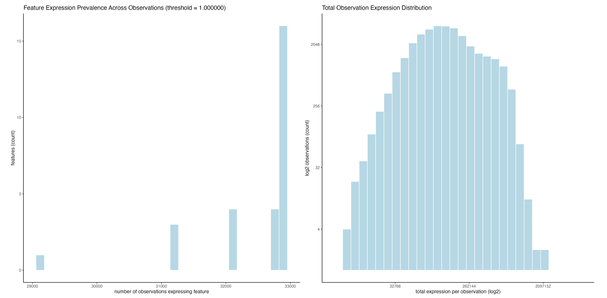
Feature presence across observations (left), and total raw expression per cell, log2 transformed on both axes (right)
What we can see here is that all features (28 in total) are detected in more than 29000 (>86.3%) of the cells, with the majority of features being detected in pretty much all of these cells (left). The fact that the distribution is not very continuous with two notable lower peaks is interesting, and suggest at either high feature/celltype specificity or some kind of technical artefact.
The data also has a normal distribution after log2 transforms of both axes, suggesting that the overall data quality is good (right).
filterDistributions(star,
detection = "cells",
save_param = list(save_name = '1_c_distribution_cells')
)
filterDistributions(star,
detection = "cells",
scale_y = "log2",
save_param = list(save_name = '1_d_distribution_cells_log')
)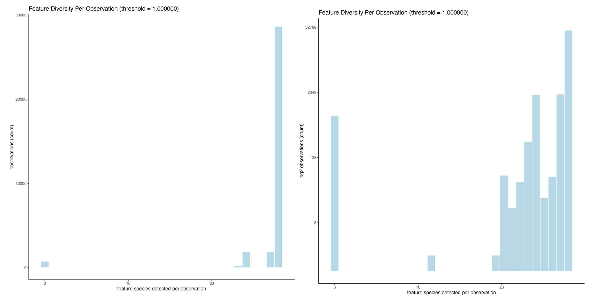
Feature richness per observation (left), and the same, but with a log2 scaling on counts (right)
Changing to number of feature species per cell, we can see that the vast majority of cells express most of the genes available in the panel. There are a couple hundred, however, with 0 expression (left). The log2 transformed data is also shown since there is a large range in number of counts (right).
Where are these cells with 0 expression?
We can run addStatistics() to calculate several
statistics about the expression information. This function looks
for normalized values by default, but we can specifically point
it at the "raw" expression matrix.
This will populate the cell and feature metadata with several columns
of statistics. (See ?addCellStatistics() and
?addFeatStatistics() for details). For this step, we are
interested in specifically the cell metadata’s total_expr
(total sum of feature expression per cell)
star <- addStatistics(star, expression_values = "raw")Next, we can set up a logical column in the metadata based on whether
the total_expr is 0.
star$no_expression <- star$total_expr == 0
sum(star$no_expression)[1] 753There are 753 cells with 0 expression.
spatPlot2D(star,
cell_color = "no_expression",
color_as_factor = TRUE,
save_param = list(save_name = "1_c_no_expression")
)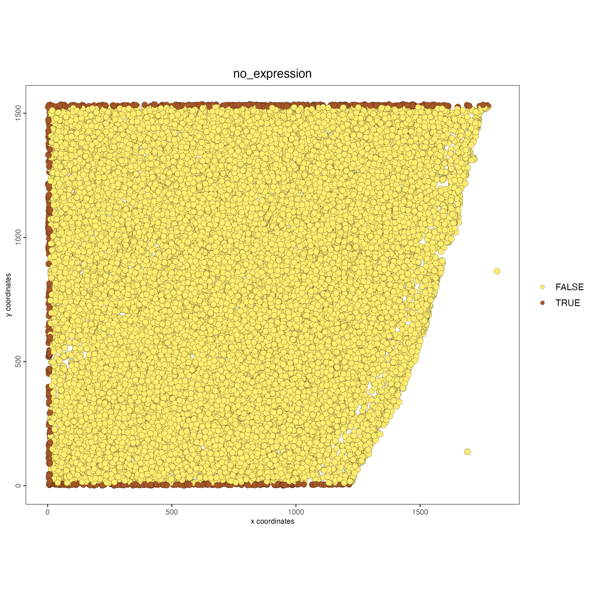
These cells can be found at the periphery of the dataset at the x min and y min/max edges. While it is generally a good idea to avoid fully removing cells based on poor expression since they do still represent spatial nodes in spatial relationships, there should be minimal issues in dropping these which are at the edge anyways.
What about the strange feature richness distribution?
The expression distribution revealed that there were several extremely specific peaks in number of features detected per cell. Such distributions are strange in biological data.
Since there are not many features in this dataset, we can explore this further by viewing the number of feature species detected per cell as a categorical.
spatPlot3D(star,
cell_color = "nr_feats",
color_as_factor = TRUE, # make these values categorical
save_param = list(save_name = "1_d_nr_feats_categorical")
)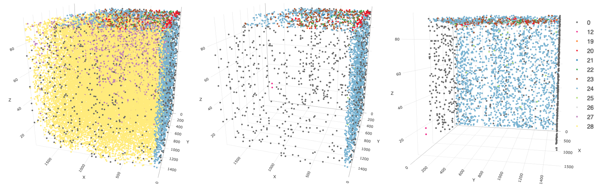
3D plot of number of feature species per cell. All nr_feats categories visible (left), the same data rotation with visibility for nr_feats 27 and 28 turned off (center), another plot with visibility for nr_feats 27 and 28 turned off, but with a roughly 90 degree rotation counter-clockwise on the XY plane that better displays the spatial distribution of the remaining cells
This plot suggests that in this dataset, "nr_feats"
below 27 can be a proxy for technical artefacts. Furthermore, turning
off the visibility of cells with more than 27 feature species highlights
that cells with fewer detections are only found at the edges of the
dataset. Cells with detection sensitivity issues are found to wrap
around the z max and x min faces.
From here, we can ask whether this sensitivity issue is a problem with all features or if it is feature-specific. It turns out that this question is better visualized with normalized values, so we can pick this up again after the filtering and normalization steps.
Overall, this technical artefact will likely result in clustering and analysis issues downstream.
One option is filtering to remove these cells, but seeing as they still contain a lot of data, it might also be possible to retain them via batch correction measures.
Basic expression filtering is performed based on three statistics. To be considered expressed, the value must surpass a defined expression threshold. Then, in order to keep a feature, it must have been detected in a defined number of cells. This is mainly a measure decreasing noise in sequencing-based methods which may have incorrectly called features. It is less important of a filter in imaging-based methods such as STARmap which have both a small probe panel and a higher detection specificity. Lastly, cells are kept only if they have a certain amount of feature richness (different feature species). This helps ensure that the cells used in downstream analyses are good quality.
We can preview the effects of different filtering parameters using
filterCombinations().
filterCombinations(star,
expression_thresholds = c(1, 2),
feat_det_in_min_cells = c(20000, 20000, 30000),
min_det_feats_per_cell = c(10, 20, 25),
save_param = list(
save_name = '2_a_filter_combs',
base_height = 5,
base_width = 8
)
)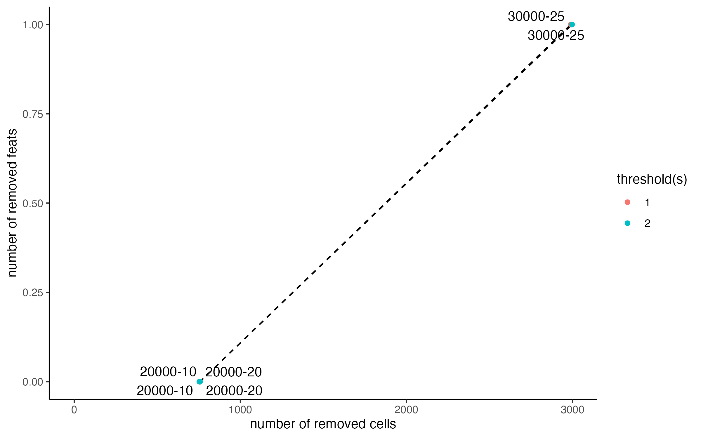
There are two lines colored by the expression_threshold
used, but they overlap, showing us that as expected, it makes no
difference for this dataset. The other two parameters also have minimal
effect until they are raised extremely high.
For this dataset, we are mainly concerned with removing the 0 count cells at the edges. Based on the distribution plots, the overall cells and features are high quality.
The cells with detection sensitivity issues can be addressed separately from this step.
star <- filterGiotto(star,
expression_threshold = 1,
feat_det_in_min_cells = 1,
min_det_feats_per_cell = 10
)Next we need to normalize and scale the data in order to make the numerical values easy to compare.
The default {Giotto} normalization and scaling pipeline performs a
library size normalization to make expression values between cells
comparable by turning counts information into a percentage of the full
expression of the cell. Next, since biological data is better understood
as relative folds of expression rather than linear comparisons, the data
is log2 transformed. This is then preserved as a matrix in the
giotto object called "normalized" by default.
These values are best used for differential expression analyses and
other techniques that benefit most from absolute as opposed to relative
values.
star <- processExpression(star, normParam("default"), expression_values = "raw")For feature visualization, a scaled matrix is can also be calculated from the normalized data by z-scoring first across features to ensure that highly expressed features do not dominate the visualization, then across cells to help accont for differences between cells that beyond just sequencing depth.
This result is preserved in the giotto object as a
matrix called "scaled" by default.
star <- processExpression(star, scaleParam("default"), expression_values = "normalized")These two steps can also be run in one step using the
normalizeGiotto() convenience function.
Next, we can refresh the statistics calculated per cell based on the normalized values.
# normalized expression is also used by default for this function.
star <- addStatistics(star, expression_values = "normalized")Visualize the total raw expression
spatPlot3D(star,
point_size = 2,
cell_color = "total_expr",
color_as_factor = FALSE,
save_param = list(save_name = "3_splot_cube")
)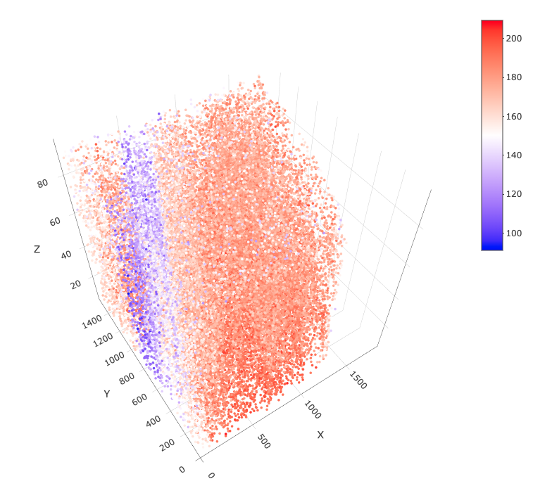
By default, this is displayed in 3D "cube" scaling. We
can change this to "real" to get an undistorted view.
spatPlot3D(star,
point_size = 2,
cell_color = "total_expr",
color_as_factor = FALSE,
axis_scale = "real",
save_param = list(save_name = "3_splot_real")
)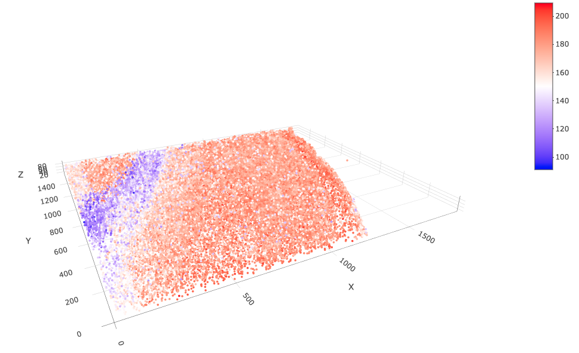
Is the detection sensitivity issue feature specific?
Now that we have normalized values, we can also look into whether the
"nr_feats" issue is a general issue across all features or
if it is specific to only some.
First we can check the feature metadata. The
addStatistics() call earlier generates cell expression
statistics, and also feature statistics which are kept in the feature
metadata. Of particular interest is the "perc_cells" column
which describes the percentage of cells in which the feature is
present.
fDataDT(star) feat_ID nr_cells perc_cells total_expr mean_expr mean_expr_det
<char> <int> <num> <num> <num> <num>
1: Slc17a7 32845 100.00000 297577.3 9.060050 9.060050
2: Mgp 32845 100.00000 158260.1 4.818392 4.818392
3: Gad1 32845 100.00000 181105.9 5.513955 5.513955
4: Nov 32845 100.00000 168434.4 5.128159 5.128159
5: Rasgrf2 32843 99.99391 216306.4 6.585673 6.586074
6: Rorb 32843 99.99391 192702.3 5.867020 5.867377
7: Cux2 32843 99.99391 209568.6 6.380532 6.380920
8: Plcxd2 32843 99.99391 192008.4 5.845895 5.846251
9: Sulf2 32813 99.90257 237296.8 7.224746 7.231792
10: Ctgf 32813 99.90257 202048.5 6.151574 6.157573
11: Pcp4 32813 99.90257 210627.9 6.412783 6.419037
12: Sema3e 32813 99.90257 198395.4 6.040354 6.046245
13: Npy 31260 95.17430 187629.9 5.712585 6.002235
14: Sst 31200 94.99163 126536.4 3.852531 4.055653
15: Pvalb 31191 94.96423 160978.7 4.901163 5.161062
16: Vip 29075 88.52185 106999.0 3.257694 3.680102
17: Calb2 32845 100.00000 193362.5 5.887120 5.887120
18: Cck 32843 99.99391 265030.1 8.069117 8.069608
19: Reln 32845 100.00000 161559.6 4.918850 4.918850
20: Fos 32845 100.00000 250407.7 7.623923 7.623923
21: Egr1 32150 97.88400 273316.3 8.321397 8.501285
22: Prok2 32150 97.88400 197160.9 6.002769 6.132533
23: Egr2 32058 97.60390 179134.5 5.453936 5.587826
24: Bdnf 32149 97.88096 157816.2 4.804879 4.908901
25: Gja1 32843 99.99391 248292.7 7.559527 7.559988
26: Ctss 32843 99.99391 241473.4 7.351907 7.352354
27: Mbp 32843 99.99391 291526.2 8.875817 8.876358
28: Flt1 32843 99.99391 214544.4 6.532027 6.532424
feat_ID nr_cells perc_cells total_expr mean_expr mean_expr_detThese percentages are generally high. We can select some with high and some with low percentage to get an idea of whether all features (both high and low presence percentages) show a marked decrease in normalized expression on the z max and x min faces.
spatFeatPlot3D(star,
feats = c(
"Slc17a7", # 100%
"Egr1", # 97.9%
"Sst", # 95.0%
"Vip" # 88.5%
),
point_size = 1,
save_param = list(save_name = "3_c_sfp3d")
)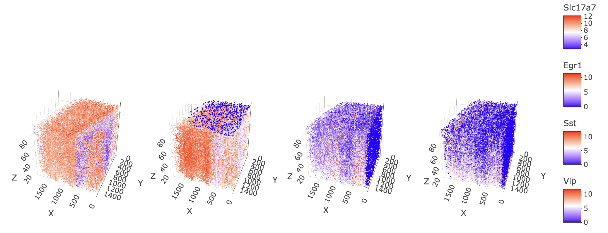
3D plot of normalized expression of (left to right) Slc17a7, Egr1, Sst, and Vip
It turns out yes, the artefacts that we see on the z max and x min faces are feature specific. Slc17a7 which has 100% feature presence in the dataset show no technical artefacts, while Egr1 has a clear sensitivity issue at z max and Sst and Vip show issues at x min.
If desired, you can try regression and imputations methods on the normalized matrix to attempt to rescue the cells displaying technical artefacts:
{limma} provides the removeBatchEffect() function which
fits a linear model to regress out differences in expression between
groups demarcated by provided covariate information.
In {Giotto}, we can use this method using either
adjustGiottoMatrix() or processExpression()
with adjustParam("limma").
First, we can try out specifying just the cells that seem to be
problematic using a cutoff on nr_feats
star$technical <- star$nr_feats < 27 # add a logical column "technical" to metadata
limma <- adjustParam("limma")
limma$covariate_columns <- svkey(feats = c("technical"))
star <- processExpression(star, limma,
expression_values = "normalized",
name = "technical_regress" # create as new matrix called "technical_regress"
)
spatFeatPlot3D(star,
feats = c(
"Slc17a7", # 100%
"Egr1", # 97.9%
"Sst", # 95.0%
"Vip" # 88.5%
),
point_size = 1,
expression_values = "technical_regress",
save_param = list(save_name = "3_d_limma_technical.png")
)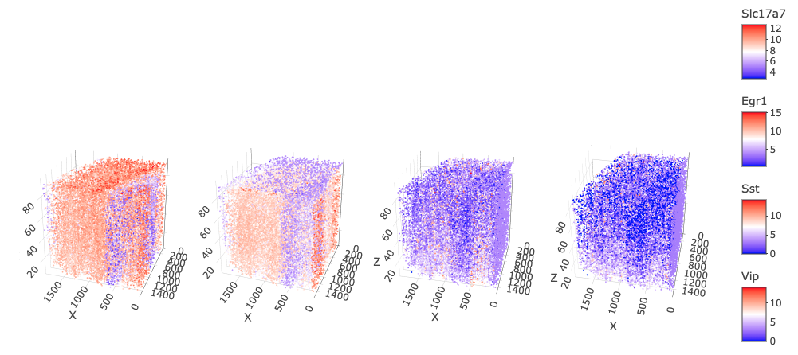
This regression shows some improvements, particularly for Sst and Vip, however, you can still see that the total expression in those two features is different from the rest of the dataset. Slc17a7 and Egr1 expression are damaged a bit by this regression since the its effects are applied across all features for this operation.
Attempts with regressing out "nr_feats" and
"nr_feats" with "total_expr" produce worse
results (not shown) where spatially organized artefacts are mostly gone,
but general biological signal reduces greatly.
These methods are often not perfect and may take a lot of tinkering to find the correct way to implement them. For brevity in this example, we will be dropping these problem cells and redoing the normalization and scaling on the updated sample space.
star <- subset(star, subset = technical == FALSE) # remove the "technical" marked cells
# repeat normalization and scaling for new expression space
star <- processExpression(star, normParam("default"), expression_values = "raw")
star <- processExpression(star, scaleParam("default"), expression_values = "normalized")
star <- addStatistics(star, expression_values = "normalized") # update stats
spatFeatPlot3D(star,
feats = c(
"Slc17a7", # 100%
"Egr1", # 97.9%
"Sst", # 95.0%
"Vip" # 88.5%
),
point_size = 1,
expression_values = "normalized",
save_param = list(save_name = "3_e_filter_technical")
)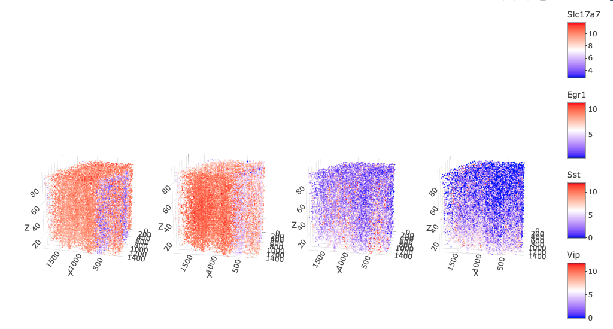
Our next goal is to cluster the cells based on their expression in order to start annotating cell types.
Each cell in this dataset is described by 28 genes, meaning that technically, the expression information is 28-dimensional. We can summarize this space by performing dimensional reduction methods to reduce data dimensionality to make them easier to analyze. See the dimension reduction tutorial for more information.
Highly variable feature detection?
For datasets with many features (multiple thousands), it is beneficial to restrict the features you use for building the dimension reduction spaces. This allows you to maximize interesting biological variation while reducing the effects of uninteresting features which may decrease separation.
In this case, with only 28 features, it is fine to skip feature selection.
Not all features are always the most interesting. In order to focus in on features with interesting variation, Principal Component Analysis can be thought of as a method to perform a rotation of the data in N-dimensional space so that earlier dimensions contain more of the variation in the dataset. This is a linear method that does not distort the values in the dataset.
We perform this first so that we can concentrate and sort the variation into the earlier dimensions, making it easier to describe the cells using the fewest dimensions, making it easier for possible downstream tasks such as feature extraction or network construction.
star <- runPCA(star,
feats_to_use = NULL, # usually this would default to "hvf", which we skipped.
)We can perform a screePlot() to view the amount of
variance captured per PC, and figure out if we want to set a cutoff on
number of PCs to include for downstream steps.
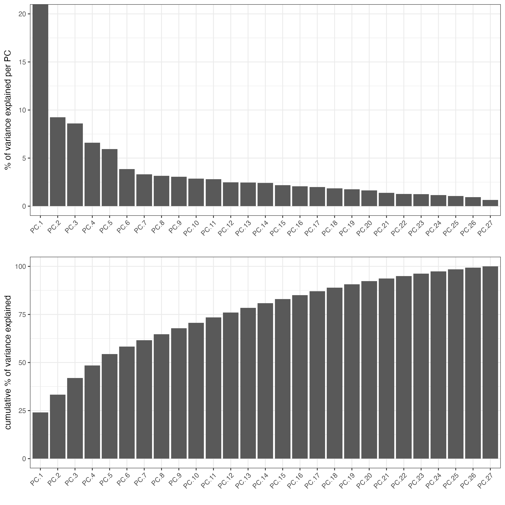
From the scree plot, we want to select a number of PCs to use for downstream dimension reduction steps building on top of the PCA. 15 is a good number since it is a little bit after the elbow and contains the PCs with the largest amounts of variance.
For visualization purposes, we can further reduce the PCA dimension reduction down to two or three dimensions using Uniform Manifold Approximation and Projection. This method does distort the values, but provides a low-dimensional projection that tries to visually encode the clustering separation of the high dimensional information.
star <- runUMAP(star,
dimensions_to_use = 1:15,
n_components = 3 # make 3D UMAP
)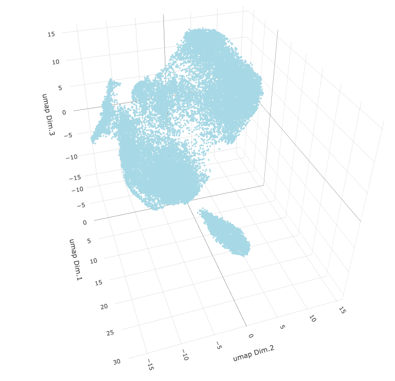
Next, we can perform clustering. The current standard method for clustering biological data is via network community detection with Leiden clustering. Key characteristics for why it is the gold standard are that it works well with complex data where clusters may be of different sizes and that it also does not require foreknowledge of the number of expected clusters like a method such as kmeans would.
In order to perform clustering in the expression space, we first need to build a network to perform the clustering on.
A common approach is creating a shared Nearest Network (sNN) network based on the PCA space.
Note that we are using the first 15 dimensions of the PCA again.
star <- createNearestNetwork(star, dimensions = 1:15)Now that we have a nearest neighbor network, we can perform Leiden
clustering. The resolution parameter allows us to control
how granular the clustering is, with higher values preferring more
clusters and a smaller value splitting the data up less. The
resolution is a param that needs to be optimized for the
clustering.
lres <- 0.2
lname <- sprintf("leiden_%s", as.character(lres))
star <- doLeidenCluster(star, resolution = lres, name = lname)
plotUMAP_3D(star,
cell_color = lname,
show_center_label = FALSE,
save_param = list(save_name = "6_a_umap_leiden")
)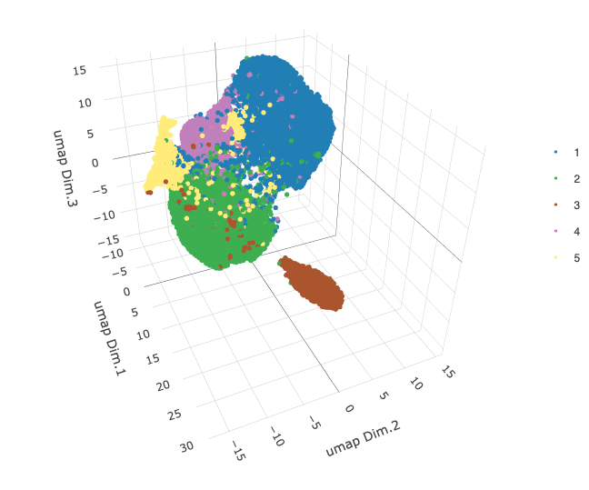
After some testing (not shown), we arrive at 0.2 as a good toplevel resolution. The calculated clusters map well to the observed clusters in the 3D UMAP.
spatPlot3D(star,
cell_color = lname,
save_param = list(save_name = "6_b_splot_leiden")
)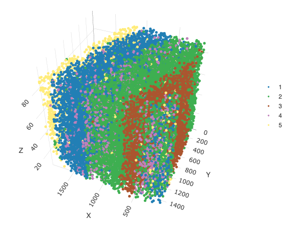
Spatially plotting these clusters, we find that these clusters greatly reflect the layers of the brain, which is something expected from the highly organized brain tissue expression.
We can look for markers of each these clusters using
findMarkers_one_vs_all(). Choosing the "scran"
method will use scran::findMarkers() to find the best
markers that define one cluster vs the rest of the dataset.
We sort on "ranking" in order to get the features that
best serve as positive markers for the cluster, then grab the best two
features per cluster.
markers = findMarkers_one_vs_all(star,
method = "scran",
expression_values = "normalized",
cluster_column = lname,
min_feats = 5
)
# sort scran results on ranking (how well a feature serves as a positive marker)
data.table::setorder(markers, "ranking")
# select the 2 highest ranked markers by leiden cluster
top_markers <- markers[, head(.SD, 2), by = "cluster"]To get an idea of how specific these markers are, we can use
violinPlot() to examine the distributions of these features
across clusters.
# violinplot
violinPlot(star,
feats = unique(top_markers$feats),
cluster_column = lname,
strip_position = "right",
save_param = list(save_name = "7_vplot")
)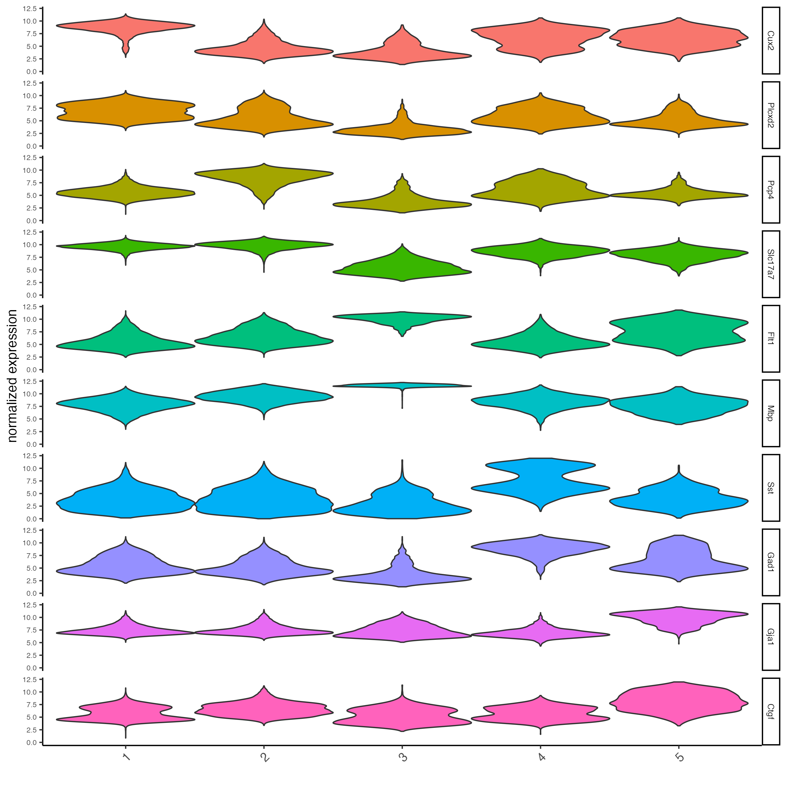
Since there are not that many features in this dataset, we can also
take a look at the overall expression of these features per cluster with
plotMetaDataHeatmap() without specifying any
selected_feats.
plotMetaDataHeatmap(star,
expression_values = "scaled",
metadata_cols = lname,
save_param = list(save_name = "8_heatmap")
)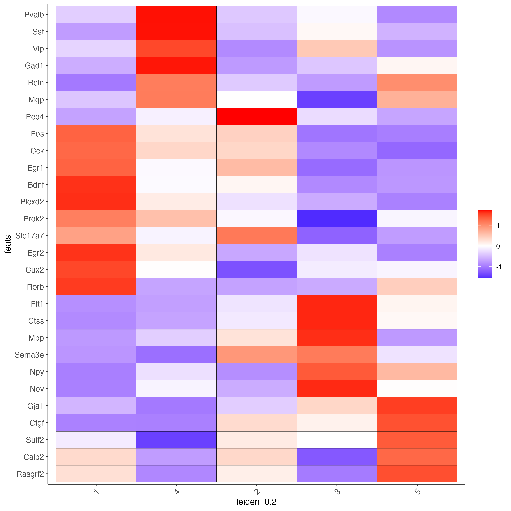
This makes it clear that there are strong enrichments for these features for specific clusters.
We can also apply some domain-specific knowledge of what these genes are good markers for. By putting features into categories, of excitatory neuron markers, inhibitory markers, and glial markers, we can get a better idea of the cell characteristics and makeup of each cluster.
To effectively perform expression distribution comparisons between
features on the intra-cluster level, we can use ridgePlot()
with group_by" set on the leiden clustering.
excit_feats <- c("Slc17a7", "Rasgrf2", "Rorb", "Cux2", "Pcp4", "Sema3e")
inhib_feats <- c("Gad1", "Sst", "Pvalb", "Vip", "Calb2", "Cck", "Npy", "Reln")
glial_feats <- c("Gja1", "Ctss", "Mbp", "Flt1")
ridgePlot(star,
feats = excit_feats,
expression_values = "normalized",
scale_axis = "pseudo_log",
group_by = lname,
title = "leiden cluster - excitatory",
save_param = list(
base_height = 5,
base_width = 11,
save_name = "9_a_ridge_excite"
)
)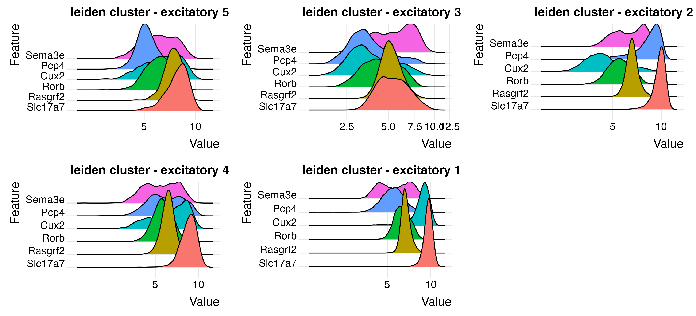
ridgePlot(star,
feats = inhib_feats,
expression_values = "normalized",
scale_axis = "pseudo_log",
group_by = lname,
title = "leiden cluster - inhibitory",
save_param = list(
base_height = 5,
base_width = 11,
save_name = "9_b_ridge_inhib"
)
)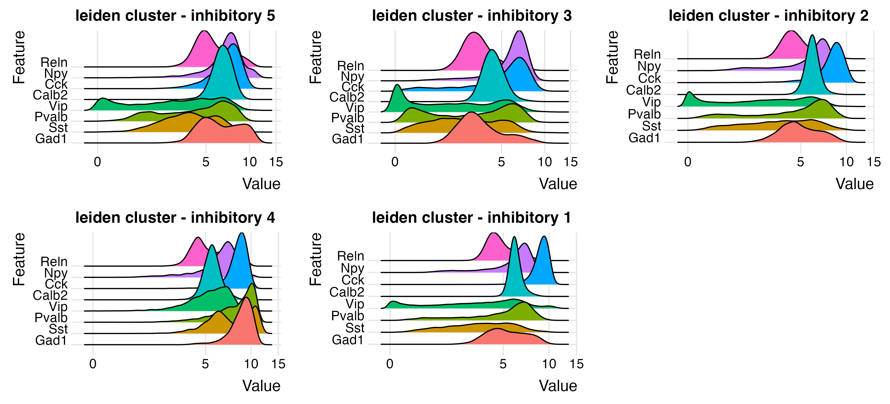
ridgePlot(star,
feats = glial_feats,
expression_values = "normalized",
scale_axis = "pseudo_log",
group_by = lname,
title = "leiden cluster - glial",
save_param = list(
base_height = 5,
base_width = 11,
save_name = "9_c_ridge_glial"
)
)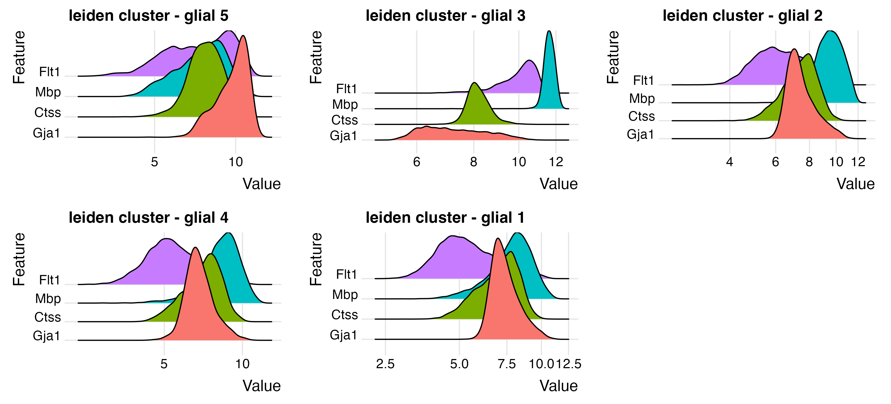
We can view these gene signatures in a combined manner by calculating
a metafeatures to represent the whole signal. Effectively, this means
that we are calculating a statistical summary (we will use the mean) for
all the features in the signature per cell. See:
?GiottoClass::createMetaFeats
Note that the fact we set up the metafeature this way does not mean that signatures are calculated relative to each other, just that they are in one single set of results.
# set up metafeature definition table
mfeat_table <- data.frame(
clus = c(
rep("excitatory", length(excit_feats)),
rep("inhibitory", length(inhib_feats)),
rep("glial", length(glial_feats))
),
feat = c(excit_feats, inhib_feats, glial_feats)
)
star <- createMetafeats(star,
feat_clusters = mfeat_table,
name = "neuro_sigs" # what to name the metafeature results
)This set of metafeatures are calculated and stored in the spatial
enrichment information of the giotto object.
We can plot the metafeatures in 3D using spatPlot3D() by
adding spat_enr_names = "neuro_sigs to make sure that the
results are attached to the information that can be pulled.
spatPlot3D(star,
cell_color = "excitatory",
spat_enr_names = "neuro_sigs",
color_as_factor = FALSE,
gradient_style = "sequential",
save_param = list(save_name = "10_a_excit_metafeat")
)
spatPlot3D(star,
cell_color = "inhibitory",
spat_enr_names = "neuro_sigs",
color_as_factor = FALSE,
gradient_style = "sequential",
save_param = list(save_name = "10_b_inhib_metafeat")
)
spatPlot3D(star,
cell_color = "glial",
spat_enr_names = "neuro_sigs",
color_as_factor = FALSE,
gradient_style = "sequential",
save_param = list(save_name = "10_c_glial_metafeat")
)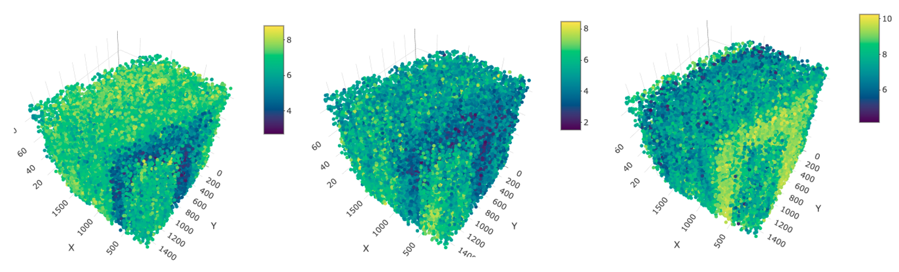
excitatory (left), inhibitory (middle), glial (right)
This can also be looked at on the expression space with
dimPlot3D()
Based on what is known from the markers,
Clusters 1, 2, 3 also show some cells where the hippocampus is supposed to be. This is actually expected based on the driving features of the clusters and the lack of specific markers to the hippocampus (such as Prox1) in the panel
# CC is corpus callosum
types <- c("L2-L4", "L5-L6", "CC", "interneuron", "L1")
names(types) <- seq.int(5)
star <- annotateGiotto(star,
annotation_vector = types,
cluster_column = lname,
name = "cell_types"
)These are an initial set of annotations that are now available in the cell metadata. Further subclustering might be able to further pull apart the cortical layers and the hippocampus. If not, taking a closer look at known expression gradients between tissue regions (such as that of Slc17a7) can also help due to the high detection rate of features in this dataset.
Giotto can create in-silico cross sections from 3D volumes by defining a plane and selecting cells within a certain normal distance from the plane. Selected cells are then flattened to a new 2D projection. We can do that here to make looking at expression across he brain layers more convenient.
First we make a spatial network. This will be used to estimate an appropriate thickness based on the usual distance between cells. The generated cross section object is also currently attached to the spatial network once created.
star <- createSpatialNetwork(star, delaunay_method = "delaunayn_geometry") # create 3D delaunay
star <- createCrossSection(star,
method = "equation",
equation = c(0, 1, 0, 1400), # equivalent to 0x + y + 0z = 1400
extend_ratio = 0.2 # decides how large the displayed meshgrid is beyond the tissue
)You can use insertCrossSectionSpatPlot3D() to visualize
the virtual section and where it was taken from.
insertCrossSectionSpatPlot3D(star,
cell_color = "cell_types",
axis_scale = 'real',
point_size = 2
)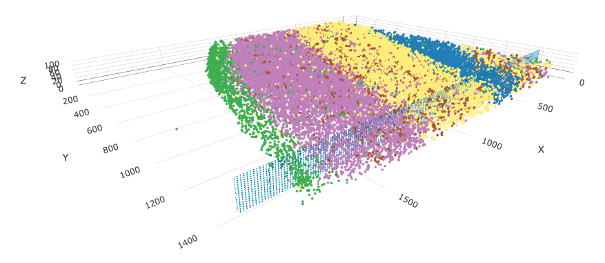
crossSectionPlot() can be used to plot the 2D projection
of the sliced through region.
crossSectionPlot(star,
point_size = 1,
cell_color = "cell_types",
save_param = list(
save_name = '12_cross_section_2d',
base_height = 2
)
)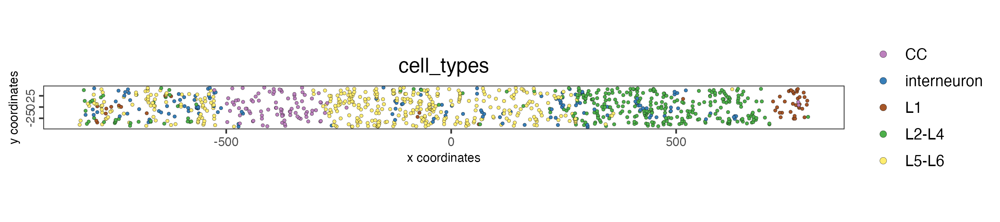
We can check the expression gradient across the 2D slice with
crossSectionFeatPlot() and visualize Slc17a7
like mentioned earlier (which should be strongly expressed in L2-L6, but
not elsewhere) alongside other patterened features. This is a matches
what is seen in the Wang et al.’s Fig2E.
crossSectionFeatPlot(star,
feats = c(
"Slc17a7", "Nov", "Cux2", "Rorb",
"Sulf2", "Pcp4", "Ctgf", "Gad1",
"Pvalb", "Sst", "Npy", "Vip", "Mgp"
),
expression_values = "scaled",
point_size = 1,
point_shape = "no_border",
cow_n_col = 1,
show_legend = FALSE,
theme_param = list(
# turn off axes to save space
axis.text.y = ggplot2::element_blank(),
axis.title = ggplot2::element_blank(),
axis.ticks = ggplot2::element_blank(),
axis.line = ggplot2::element_blank()
),
save_param = list(
save_name = "13_c_cross_section_features",
base_height = 11,
base_width = 9
)
)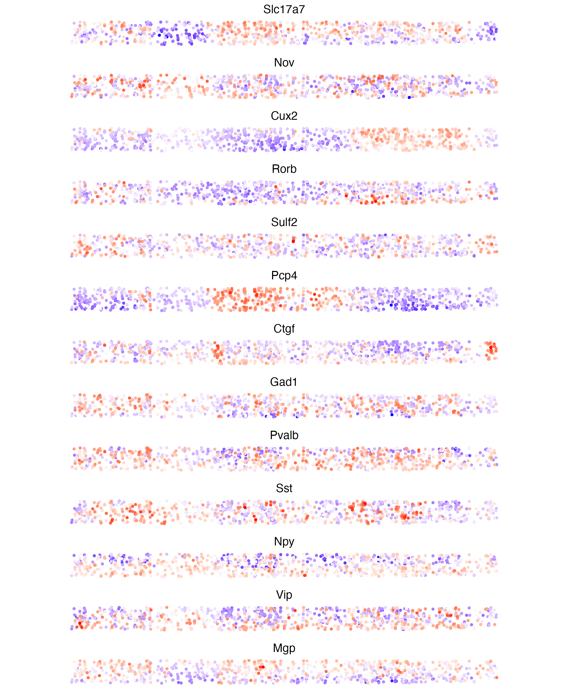
2D plot of feature expression across cross section. This is similar to Fig2E from the paper. This plot includes the hippocampal region which is cropped out of the original.
R version 4.4.1 (2024-06-14)
Platform: aarch64-apple-darwin20
Running under: macOS 15.3.1
Matrix products: default
BLAS: /System/Library/Frameworks/Accelerate.framework/Versions/A/Frameworks/vecLib.framework/Versions/A/libBLAS.dylib
LAPACK: /Library/Frameworks/R.framework/Versions/4.4-arm64/Resources/lib/libRlapack.dylib; LAPACK version 3.12.0
locale:
[1] en_US.UTF-8/en_US.UTF-8/en_US.UTF-8/C/en_US.UTF-8/en_US.UTF-8
time zone: America/New_York
tzcode source: internal
attached base packages:
[1] stats graphics grDevices utils datasets methods base
other attached packages:
[1] GiottoVisuals_0.2.12 Giotto_4.2.1 testthat_3.2.1.1
[4] GiottoClass_0.4.7
loaded via a namespace (and not attached):
[1] RcppAnnoy_0.0.22 later_1.3.2
[3] tibble_3.2.1 R.oo_1.26.0
[5] polyclip_1.10-7 dbMatrix_0.0.0.9023
[7] lifecycle_1.0.4 edgeR_4.2.0
[9] rprojroot_2.0.4 lattice_0.22-6
[11] MASS_7.3-60.2 crosstalk_1.2.1
[13] backports_1.5.0 magrittr_2.0.3
[15] limma_3.60.0 plotly_4.10.4
[17] rmarkdown_2.29 yaml_2.3.10
[19] remotes_2.5.0 metapod_1.12.0
[21] httpuv_1.6.15 sessioninfo_1.2.2
[23] pkgbuild_1.4.4 reticulate_1.39.0
[25] cowplot_1.1.3 RColorBrewer_1.1-3
[27] abind_1.4-8 pkgload_1.3.4
[29] zlibbioc_1.50.0 GenomicRanges_1.56.0
[31] purrr_1.0.2 R.utils_2.12.3
[33] ggraph_2.2.1 BiocGenerics_0.50.0
[35] tweenr_2.0.3 GenomeInfoDbData_1.2.12
[37] IRanges_2.38.0 S4Vectors_0.42.0
[39] ggrepel_0.9.6 irlba_2.3.5.1
[41] terra_1.8-29 dqrng_0.4.1
[43] DelayedMatrixStats_1.26.0 colorRamp2_0.1.0
[45] codetools_0.2-20 DelayedArray_0.30.0
[47] scuttle_1.14.0 ggforce_0.4.2
[49] tidyselect_1.2.1 UCSC.utils_1.0.0
[51] farver_2.1.2 ScaledMatrix_1.12.0
[53] viridis_0.6.5 matrixStats_1.4.1
[55] stats4_4.4.1 jsonlite_1.8.9
[57] BiocNeighbors_1.22.0 progressr_0.14.0
[59] ellipsis_0.3.2 tidygraph_1.3.1
[61] ggridges_0.5.6 systemfonts_1.1.0
[63] dbscan_1.2-0 tools_4.4.1
[65] ragg_1.3.2 Rcpp_1.0.13-1
[67] glue_1.8.0 gridExtra_2.3
[69] SparseArray_1.4.1 xfun_0.49
[71] MatrixGenerics_1.16.0 usethis_2.2.3
[73] GenomeInfoDb_1.40.0 dplyr_1.1.4
[75] withr_3.0.2 fastmap_1.2.0
[77] bluster_1.14.0 fansi_1.0.6
[79] digest_0.6.37 rsvd_1.0.5
[81] R6_2.5.1 mime_0.12
[83] textshaping_0.3.7 colorspace_2.1-1
[85] scattermore_1.2 gtools_3.9.5
[87] R.methodsS3_1.8.2 utf8_1.2.4
[89] tidyr_1.3.1 generics_0.1.3
[91] data.table_1.16.2 graphlayouts_1.1.1
[93] httr_1.4.7 htmlwidgets_1.6.4
[95] S4Arrays_1.4.0 uwot_0.2.2
[97] pkgconfig_2.0.3 gtable_0.3.6
[99] SingleCellExperiment_1.26.0 XVector_0.44.0
[101] brio_1.1.5 htmltools_0.5.8.1
[103] profvis_0.3.8 scales_1.3.0
[105] Biobase_2.64.0 GiottoUtils_0.2.4
[107] png_0.1-8 SpatialExperiment_1.14.0
[109] geometry_0.4.7 scran_1.32.0
[111] knitr_1.49 rstudioapi_0.16.0
[113] rjson_0.2.21 magic_1.6-1
[115] checkmate_2.3.2 cachem_1.1.0
[117] stringr_1.5.1 parallel_4.4.1
[119] miniUI_0.1.1.1 desc_1.4.3
[121] pillar_1.9.0 grid_4.4.1
[123] vctrs_0.6.5 urlchecker_1.0.1
[125] promises_1.3.0 BiocSingular_1.20.0
[127] beachmat_2.20.0 xtable_1.8-4
[129] cluster_2.1.6 evaluate_1.0.1
[131] magick_2.8.5 cli_3.6.3
[133] locfit_1.5-9.9 compiler_4.4.1
[135] rlang_1.1.4 crayon_1.5.3
[137] labeling_0.4.3 fs_1.6.5
[139] stringi_1.8.4 viridisLite_0.4.2
[141] BiocParallel_1.38.0 munsell_0.5.1
[143] lazyeval_0.2.2 devtools_2.4.5
[145] Matrix_1.7-0 sparseMatrixStats_1.16.0
[147] ggplot2_3.5.1 statmod_1.5.0
[149] shiny_1.9.1 SummarizedExperiment_1.34.0
[151] igraph_2.1.1 memoise_2.0.1